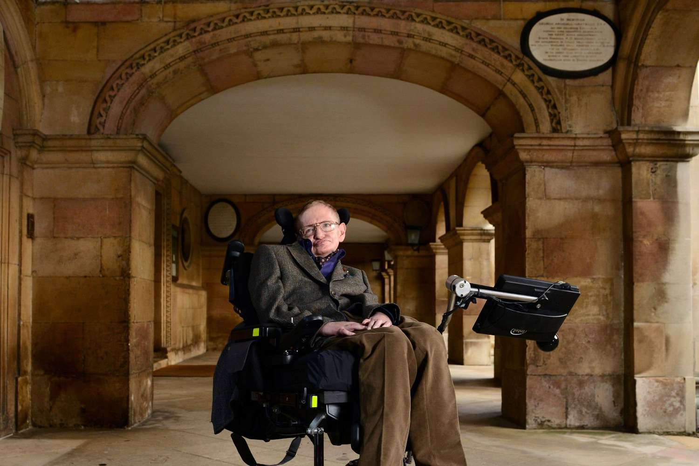

Theoretical Physicist • Cosmologist • Author

Stephen Hawking
"However difficult life may seem, there is always something you can do and succeed at."
Biography
Stephen William Hawking was one of the greatest theoretical physicists
of all time. Despite being diagnosed with ALS at the age of 21, he
transformed our understanding of black holes, cosmology, and the
origins of the universe.
Major Achievements
- Developed Hawking Radiation Theory.
- Advanced the understanding of black holes.
- Made significant contributions to cosmology.
- Held the Lucasian Professorship of Mathematics at Cambridge.
- Inspired millions through science communication.
Timeline
- 1942: Born in Oxford, England.
- 1963: Diagnosed with ALS.
- 1974: Proposed Hawking Radiation.
- 1988: Published A Brief History of Time.
- 2018: Passed away, leaving a lasting scientific legacy.
Books & Contributions
- A Brief History of Time
- The Universe in a Nutshell
- The Grand Design
- Brief Answers to the Big Questions
Legacy
Stephen Hawking demonstrated that determination, curiosity,
and intelligence can overcome extraordinary challenges.
His work continues to inspire scientists and students worldwide.